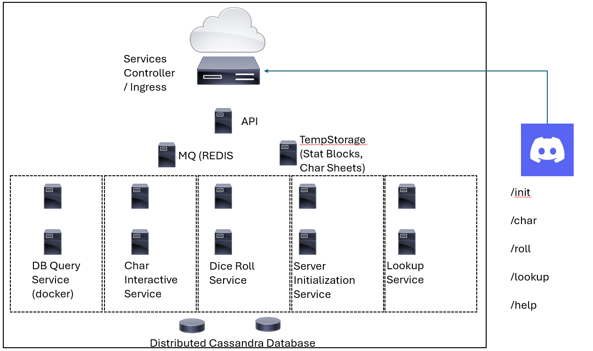

DNDIO
A proof-of-concept application for integrating DND games with Discord.
Project Team:
Patrick Connelly, paco2756@colorado.edu
Alexis Cooper,
Ghizlaine Rehioui, ghizlane.rehioui@colorado.edu
Overview
For Class CSCI 5253 (DataCenter Scale Computing), this project team seeks to develop a set of services that:
provides a repository of information for building DND characters
stores character information and state in a cloud-native database
Enables players and dungeon masters to interface with character state via Discord:
Discord Server Initialization for a DND campaign
Getting and setting character attributes
Requesting Dice Roll services
Looking up important game information
Within Discord, we will build a bot similar to Dice Maiden, but with additional features and commands that simplify the rolling of dice, integrating character information to do so and save players’ time during campaigns.
Project Goals
This project ceeks to create and deploy a cloud-native service set leveraging multiple technologies to simplify the process of participating in Dungeons and Dragons (DND) campaign sessions, integrating the service with a social media application such that players can interact and have an easier time playing.
The short list of goals are as follows:
Implement a Discord bot to listen for and relay commands to and from cloud services
Implement multi-region service clusters for accessibility, responsiveness, and …
Implement distributed databases for storage of campaign information, player information, and general information on DND to simplify the playing process
Automate services for players to enable simple commands for:
Rolling dice under multiple game conditions
Create-Read-Update-Delete operations for character information
Read / Lookup rules and information for various in-game requirements (equipment, spells, attacks, weapons, etc)
Implement client-service efficiencies using protocol buffers and message queueing
Create a large volume of mock campaigns, characters, and users for testing
Create stress-testing virtual machines in multiple regions to verify that cloud services remain available and responsive for:
Dice roll commands
Character CRUD operations
Game lookup operations
More specific implementation goals include the following:
Provide a Discord channel initialization service that:
Creates individual chats between Discord Bot and each character for interacting with their cloud-based character data
stores new blank characters in the cloud service
Provide a character interface service that allows players to:
Roll values and assign to character stats including Charisma, Strength, Intelligence, Wisdom, Dexterity, and Constitution
Lookup, select, and set Key Character Information:
Alignment
Background
Inventory
Spells / Cantrips Known
Weapons
Equipped Items
Hit Points & Hit Dice
Request die rolls for:
Initiative (determine turn order)
attack (with equipped weapon)
spellcasting (for known spells)
skillcheck (for any skill)
The character interface service respond to requests:
In the individual channel for the character’s user with verbose information
In the campaign channel with summarized actions taken
Provide help messages/syntax for any erroneous requests
Successfully enqueue and dequeue requests and responses between users and cloud services
Successfully store, read, and update character information to/from cloud services
Write scripts in Python to submit large volumes of requests to:
Initialize new Discord channels and characters
Submit updates to character stats
Submit updates to character known spells
Request lookups of available stat blocks and equipment information
High-Level Service Concept
Service Architecture and Implementation Requirements
To develop and deliver this service, the project team plans to leverage the following technologies and systems:
Database implementation
Perform web scraping to gather large volumes of DND information for parsing
Parse raw text data from scraped data to record or database format
Implementation of DBMS in Cassandra (for campaign/character information, and for game information/rules)
Creation and population of Cassandra DB tables using parsed data
Creation of additional tables for managing information on campaigns, discord channels, discord users, and their characters.
Message queueing and handling in RabbitMQ
Queue for inbound API calls to multiple workers
Queues for worker calls to and from DBMS service
Discord API/Bot Integration
Coding a bot to listen for user commands
Perform command error checking and validation
Encapuslation of commands into protocol buffer messages, relaying to cloud services
Receipt of responses from cloud services, de-encapsulating and outputting to users in Discord
REST API Server
Receive inbound requests from Discord users and channels
Parse requests and relay to worker queues
Virtualization/Containerization
Build stress testing servers in multiple gcloud regions and zones
Stress-testing scripts to pump large volume of commands into the cloud service
Logging to caputre the input commands and output results
Error counting and checking

System and Component Interactions
Debugging
Develop cloud services locally within Docker Desktop and Kubernetes, including:
DBMS
RestAPI
Worker functions as a service
gRPC / protocol buffer implementation
During the debugging phase, we’ll test the conceptual flows of data from a single Discord channel to ensure our identified commands are functioning as desired and required.
Additionally, we’ll execute the components of our stress testing scripts locally to ensure that they are well-coded, functioning as needed, and capturing the performance data necessary for testing and validation.
After initial development and debugging are completed, the project will proceed to cloud deployment, during which the same tests will be implemented
Testing / Validation
To test and validate our project - we plan to deploy virtual machines in multiple regions. These VMs will be deployed with mock data, representing a large volume (hundreds) of DND campaigns with a large volume (thousands) of users, and their corresponding characters.
Additionally, we will have testing scripts to iterate through our identified commands for each of the characters in the mock data. The intent here is to produce a large volume of REST requests to the cloud service.
During the stress testing run, some data capture is necessary. We intend to gather the following information to store locally and export from the VMs:
Executed requests and their responses (csv).
Time between request and response (csv)
Whether or not the response had an error or failed to return data (csv).
The following additional information needs to be captured from cloud services:
When / if cloud systems:
scale up and scale down
fail or have system errors
This will first be done at a lower rate to verify that the services are functioning and stable, with a short time delay between commands. Further tests can be conducted with shorter or no time delay between commands. These additional tests are needed to ensure there is not a substantial performance backlog and that the cloud deployments scale sufficiently to meet user demand.
Scope
As a proof-of-concept project, this project will not provide or automate 100% of the features and functionality of a Dungeons and Dragons Campaign. The ultimate goal is to simplify dice rolling for players to accelerate the ability to cast spells, perform attacks, and so forth. As such, the following aspects are out-of-scope for this proof of concept:
Automating rule enforcement for characters such as:
changes to class features
changes to character levels
changes to known cantrips/spells
changes to proficiency bonus or skill modifiers
Integrating temporary character bonuses or handicaps imposed by other spells, feats, or other abilities
Tracking historic character information and changes over time
General languages/tech:
Cassandra for DBMS
Docker/k8s containers for cloud service virtulization and containers
- Scaling of workers based on client demand
Python for:
REST API devleopment
Protocol buffer implementation
Worker scaling based on request volume
Message queueing and handling in Redis:
character interaction queue
roll request queue
lookup request queue
initialization service queue
DBMS queues (one for each worker type)
Protobufs for message relaying and handling messages from Discord Bot to API server
Others as needed
Requirements Fulfillment
Five core technologies from the course are identified for use in this project:
protocol buffers + RestAPI
message queueing (RabbitMQ)
databases (Cassandra)
software-defined networking (multi-region service integration)
virtual machines (stress testing) and containerization (cloud services)
Additional technologies incorporated:
Discord API
Python for web scraping and data gathering
Additionally, we are passionate about this project. A service like this, provided that the fullest extent of required data and implementation were performed, could serve as a workable cloud-native business model. There are existing web services like Roll20, Obsidian, and DNDBeyond, but none of them have integration with Discord. Dice Maiden provides dice rolling integration with Discord, but still forces players to look up information necessary to roll their dice. This project seeks to bring those capabilities together!